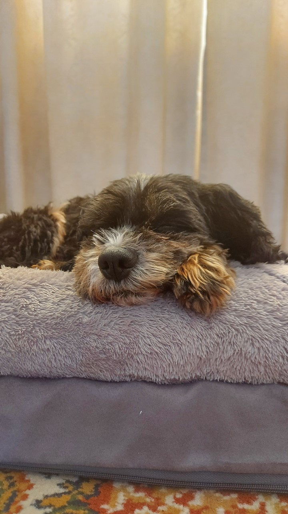

Bo Kim Tran (S3954173)
My website: https://s3954173.github.io/COSC1078-Assignment-1/
I was born in Australia but have a half-Chinese and half-Vietnamese ethnicity. In 2019, I undertook a traineeship with Apprenticeship Support Australia. Since then, I have been working as a Client Service Officer providing crucial support to businesses and apprentices especially during COVID and being responsible for administering government subsidies to clients. Some of my hobbies include experimenting with programming languages and playing games like Elden Ring. I especially love going on walks with my pet dog Vilo (see below for maximum adorableness!)
I have a fair amount of IT experience in terms of what I have learnt or have been exposed to. I have dabbled with Python, Raspberry Pis, building computers, configuring networks, playing VR games and have been continuously exploring the different options available in the IT industry.
At work, I occasionally become the de facto “IT guy” when the IT department is not available. My current number one interest in IT has been cybersecurity and ethical hacking. It started with prospects of high pay and being the ‘Hacker Man.’ However, further research into this industry gave me motivation to learn vital skills and knowledge to protect myself, my family, and others from the constant threats we face online. Also having legally immunity (when granted by the client) to break into people’s things sounds like fun.
Bo's Personaility Tests


My ‘16 Personalities’ test summarised me as a Logistician. This type of personality is known to be reliable they can stay focused and logical even during high intense situations. My learning style test showed I was primarily a kinesthetic learner meaning I prefer learning new concepts by experiencing and experimenting with them without reading up on these concepts. Finally, in the ‘Big Five’ test, it showed I am a self-driven individual who focuses on completing his duties without compromising his morals and assume a leadership role for group work.
A key point I understood from my test outcomes which may be useful to my team, is that I would assume the leadership role and duties in the team. Furthermore, my potential effectiveness as a leader is enhanced by my capability to manage stressful situations and remained focused on the task at hand. This means I can effectively manage and organise the team to complete tasks on schedule, delegate duties, and ensure members are contributing. This thereby can reduce panic and stress from disorganisation, having too much of a workload, or last-minute assignment rushes. This will also provide opportunities for our work to be reviewed and improved before submission.